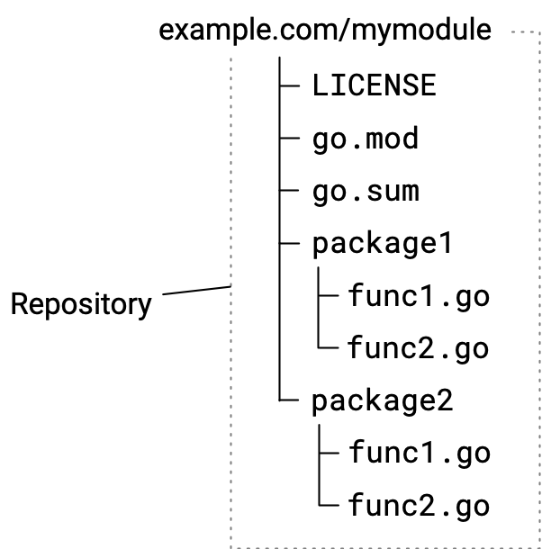
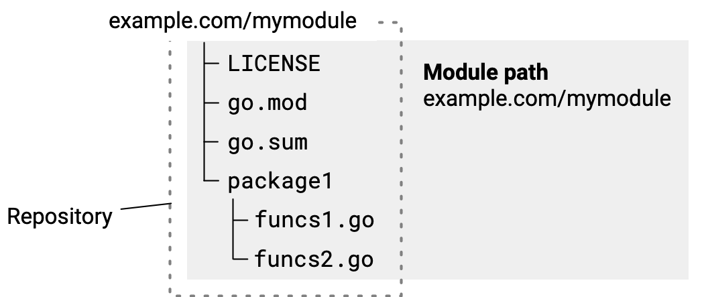
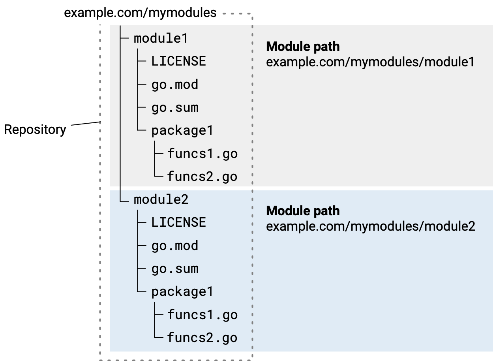

Managing module source
When you’re developing modules to publish for others to use, you can help ensure that your modules are easier for other developers to use by following the repository conventions described in this topic.
This topic describes actions you might take when managing your module repository. For information about the sequence of workflow steps you’d take when revising from version to version, see Module release and versioning workflow.
Some of the conventions described here are required in modules, while others are best practices. This content assumes you’re familiar with the basic module use practices described in Managing dependencies.
Go supports the following repositories for publishing modules: Git, Subversion, Mercurial, Bazaar, and Fossil.
For an overview of module development, see Developing and publishing modules.
How Go tools find your published module
In Go’s decentralized system for publishing modules and retrieving their code,
you can publish your module while leaving the code in your repository. Go tools
rely on naming rules that have repository paths and repository tags indicating a
module’s name and version number. When your repository follows these
requirements, your module code is downloadable from your repository by Go tools
such as the go get
command.
When a developer uses the go get command to get source code for packages their
code imports, the command does the following:
- From
importstatements in Go source code,go getidentifies the module path within the package path. - Using a URL derived from the module path, the command locates the module source on a module proxy server or at its repository directly.
- Locates source for the module version to download by matching the module’s
version number to a repository tag to discover the code in the repository.
When a version number to use is not yet known,
go getlocates the latest release version. - Retrieves module source and downloads it to the developer’s local module cache.
Organizing code in the repository
You can keep maintenance simple and improve developers’ experience with your module by following the conventions described here. Getting your module code into a repository is generally as simple as with other code.
The following diagram illustrates a source hierarchy for a simple module with two packages.

Your initial commit should include files listed in the following table:
| File | Description |
|---|---|
| LICENSE | The module's license. |
| go.mod | Describes the module, including its module path (in effect, its name) and its dependencies. For more, see the go.mod reference. The module path will be given in a module directive, such as: module example.com/mymodule For more about choosing a module path, see Managing dependencies. Though you can edit the go.mod file, you'll find it more reliable to
make changes through |
| go.sum | Contains cryptographic hashes that represent the module's dependencies. Go tools use these hashes to authenticate downloaded modules, attempting to confirm that the downloaded module is authentic. Where this confirmation fails, Go will display a security error.
The file will be empty or not present when there are no dependencies.
You shouldn't edit this file except by using the |
| Package directories and .go sources. | Directories and .go files that comprise the Go packages and sources in the module. |
From the command-line, you can create an empty repository, add the files that will be part of your initial commit, and commit with a message. Here’s an example using git:
$ git init
$ git add --all
$ git commit -m "mycode: initial commit"
$ git push
Choosing repository scope
You publish code in a module when the code should be versioned independently from code in other modules.
Designing your repository so that it hosts a single module at its root directory will help keep maintenance simpler, particularly over time as you publish new minor and patch versions, branch into new major versions, and so on. However, if your needs require it, you can instead maintain a collection of modules in a single repository.
Sourcing one module per repository
You can maintain a repository that has a single module’s source in it. In this model, you place your go.mod file at the repository root, with package subdirectories containing Go source beneath.
This is the simplest approach, making your module likely easier to manage over time. It helps you avoid the need to prefix a module version number with a directory path.

Sourcing multiple modules in a single repository
You can publish multiple modules from a single repository. For example, you might have code in a single repository that constitutes multiple modules, but want to version those modules separately.
Each subdirectory that is a module root directory must have its own go.mod file.
Sourcing module code in subdirectories changes the form of the version tag you must use when publishing a module. You must prefix the version number part of the tag with the name of the subdirectory that is the module root. For more about version numbers, see Module version numbering.
For example, for module example.com/mymodules/module1 below, you would have
the following for version v1.2.3:
- Module path:
example.com/mymodules/module1 - Version tag:
module1/v1.2.3 - Package path imported by a user:
example.com/mymodules/module1/package1 - Module path and version as specified in a user’s require directive:
example.com/mymodules/module1 v1.2.3
